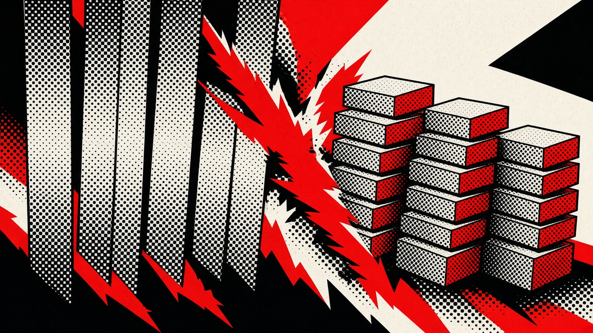
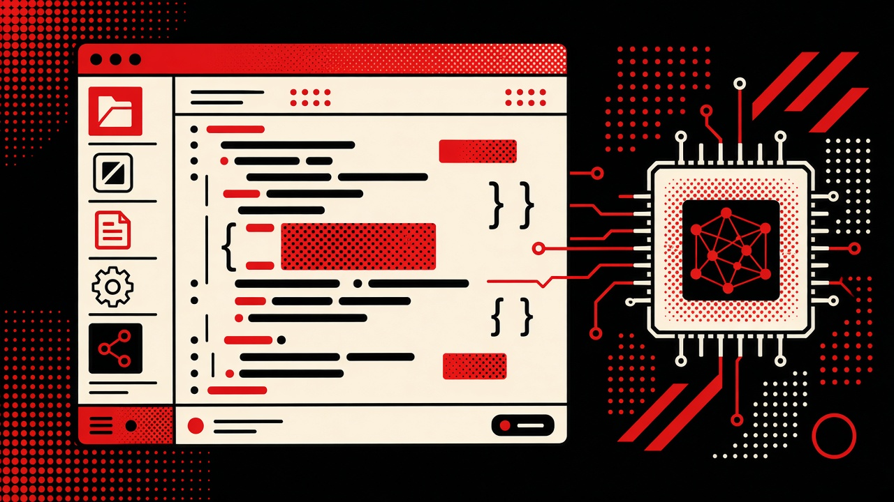
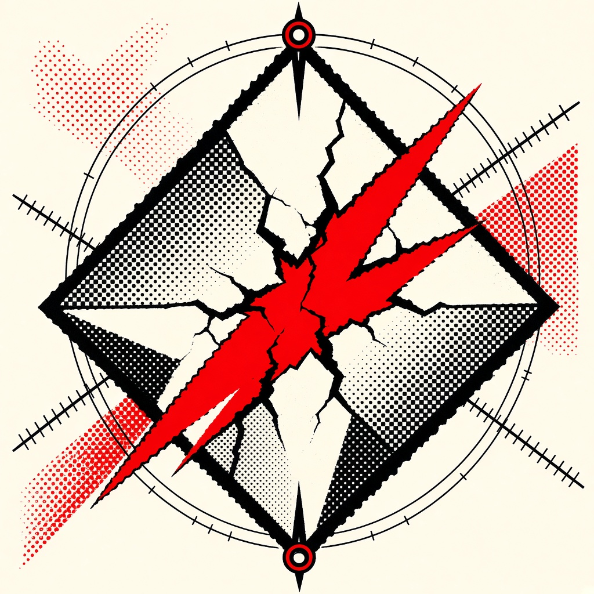
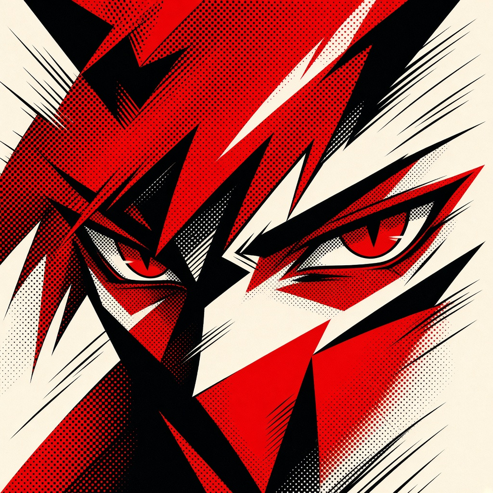

Incoming Software Engineering Intern, Infrastructure
Jan–Apr 2027Super.com · Toronto, ON
Joining the Infrastructure team for Winter 2027.

I build infrastructure, local AI systems, and storage engines. Incoming Software Engineering Intern, Infrastructure at Super.com.
This is an unofficial fan portfolio. It is not affiliated with, endorsed by, or sponsored by Atlus or Sega.
Persona 5, Persona 3 Reload, and the characters, logos, menu artwork, and interface elements shown here are the property of Atlus Co., Ltd. and Sega Corporation. © ATLUS. © SEGA. All rights reserved. Naming the owners is attribution. It is not a license, and no ownership is claimed over that artwork.
The photograph, résumé, and project screenshots are Zain Bughio's. The stat and lab posters were drawn for this site.
Production sites, a live hospital network, then agent infrastructure. Super.com is next.
Super.com · Toronto, ON
Joining the Infrastructure team for Winter 2027.
Waterloo Regional Health Network · Waterloo, ON
3 PBZero downtime100+ stations2 weeks
Rubricle · AI startup · Remote
/p/<profile>/ API access runs through a single port.PixelsBoost · Milton, ON
$10K+/mo1,500+ users99% uptime40% faster
An AI coding IDE where the model, the memory, and the training all run on your machine.
Frame is a desktop IDE with its own on-device agent stack. It assembles context from what it knows about your project, runs Qwen2.5-Coder-7B locally through llama.cpp, and learns your style over time. Nothing goes to a cloud API.
IDE builds published to GitHub Releases. Models install from inside the app, never silently.
MLX QLoRA fine-tuning, fused and quantized to Q4 GGUF. Approved preferences schedule an on-device LoRA job.
An isolated process runs GGUF weights with node-llama-cpp and Metal on Apple Silicon. The editor never loads tensors.
Sandboxed workspace tools, validated edit plans with apply and undo, and token streaming into chat.
Multi-tier memory, a per-project RAG index, a workspace knowledge graph, and approved preferences.
An orchestrator routes each task into context and runtime. A sidebar manages models, hardware, and learning.
A full desktop editor branded as Frame, with telemetry and auto-updates off by default.
Fused 4-bit agent model. The default, shipped path.
8-bit for machines with more memory headroom.
Full precision for high-memory workstations.

179 million Nasdaq records. 10% smaller than Parquet, and 2.6× faster to ingest.
A price-time priority matching engine, fed by a synthetic order stream.

Installable IDE builds. The 4-bit model installs from inside the app.
Hand-written C++ on a 64 GB Apple Silicon MacBook Pro.
How much memory the coding model actually takes.
49,686RMSE
Random Forest, MLflow, exported to ONNX.
GitHub ↗
Focused on tech. Playing an ungodly amount of games.
Academic awards over the years.
Played Fortnite professionally. Still an ungodly amount on top of that.

Watched a ton of anime.
Building constantly. Frame, Strata, and whatever is next.
I'm Zain, a Math student at the University of Waterloo who builds systems end to end, from network cables to model weights.
I'm double-majoring in Applied Mathematics (Scientific Machine Learning) and Statistics, graduating in 2029. In January I join Super.com as a Software Engineering Intern on the Infrastructure team.
I've shipped production sites that process $10K+ a month for 1,500+ users. I've worked directly inside a live hospital data centre, on the network in front of 3 PB of clinical data, with zero downtime. I've also deployed containerized AI agent infrastructure for an AI startup.
Outside work I build the things I want to exist. Frame is a private AI coding IDE that runs and fine-tunes its own model on your machine. Strata is a Rust storage engine that beats Parquet on size and ingests 2.6× faster.
Off the clock I'm into anime, the gym, and video games. I've played Fortnite professionally. See my stats ↗
I'm building a lot right now.
Local AI, storage engines, infrastructure. If you're working on something ambitious, want to collaborate, or have a role in mind, reach out.
Email me ↗